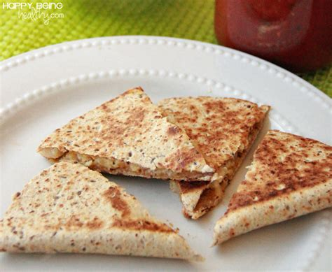

Quesadilla with Chicharrones

There is nothing better than a classic quesadilla! So
nice and melty, but
this is time where gonna add somehing special,
chicharrones!
This recipe takes your classic quesadilla recipe
with medium chedder cheese, and adds chicharrones!
Measurements & Ingredients
- 2 Tortillas
- 1 ounce of Medium Chedder Cheese
- 1 ounce of Chicharrones
- 1/2 Cup of Green Salsa
Steps
- Add chicharrones and green salsa to a bowl
and mix together, then place to side.
- Place first tortilla on hot pan
- immediately evenly spread half of your cheese,
on the tortilla you placed on the pan.
- Spread the chicharrones evenly over the cheese.
- Evenly sprinkle the rest of your cheese
over cooking tortilla
- Place second tortilla over the quesadilla.
- Cook for about 2.5 minutes, flip,
then cook another 2.5 minutes
- Serve immediately
Enjoy!
Now enjoy this wonderful crispy disk of heaven